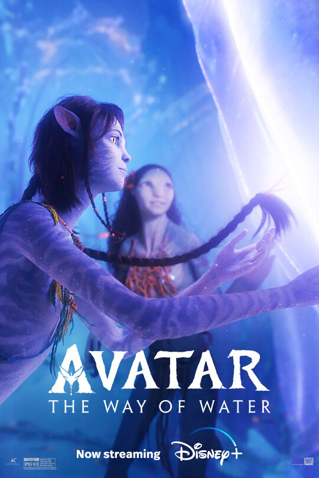

Avatar: The Way of Water
It follows a blue-skinned humanoid Na'vi named Jake Sully (Worthington) as he and his family, under renewed human threat, seek refuge with the aquatic Metkayina clan of Pandora, a habitable exomoon on which they live.
Sam Worthington as Jake Sully,
Zoe Saldaña as Neytiri te Tskaha Mo'at'ite (Neytiri Sully),
Sigourney Weaver as Kiri te Suli Kireysi'ite (Kiri Sully),
Stephen Lang as Colonel Miles Quaritch,
PG-13